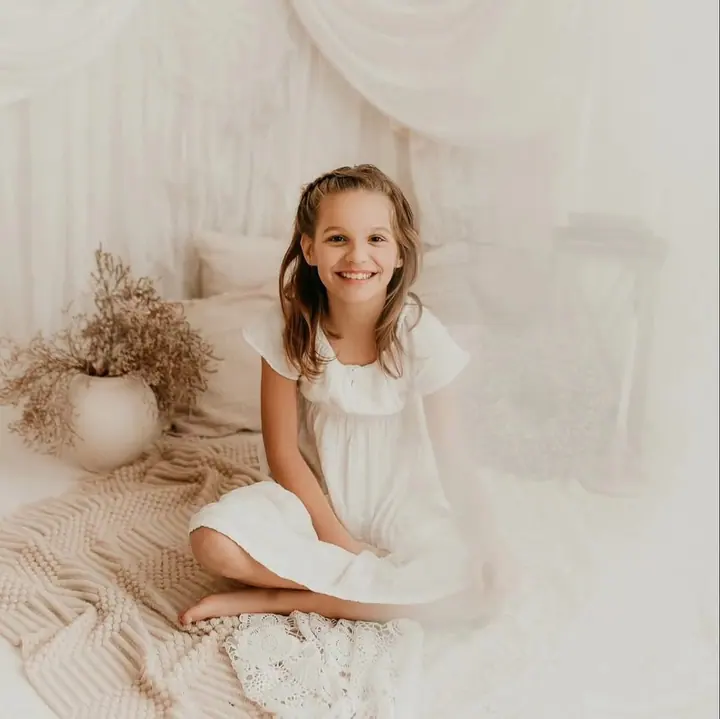
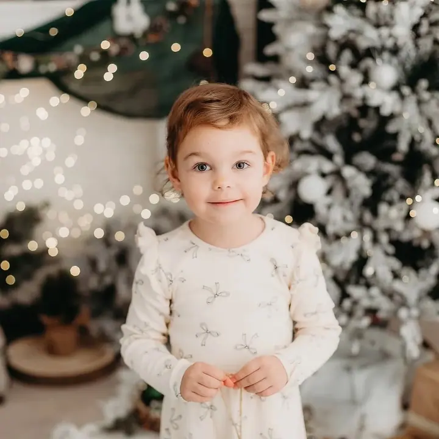
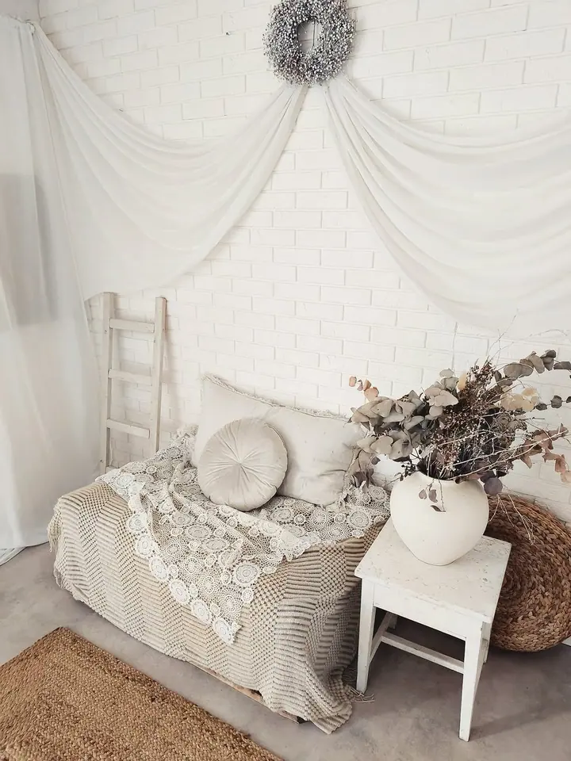
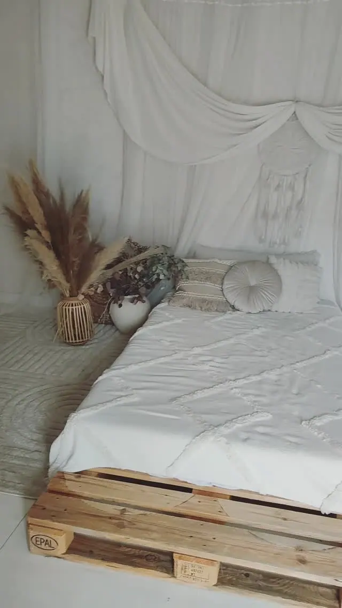

Děti a rodina
Rodinné focení v ateliéru i venku, v klidu a bez spěchu. Děti se u mě mohou smát a řádit, jak jsou zvyklé.

Jmenuji se Daniela Ševčíková a fotím svatby, rodiny a děti ve svém ateliéru i venku v přírodě. Najdete mě v Pleších u Jindřichova Hradce, ale za vámi ráda přijedu kamkol…
Rezervovat termínFotografování je mou vášní i životní cestou. Specializuji se na svatební a portrétní fotografii a nejvíc mě baví zachytit emoce, příběhy a vztahy mezi lidmi. Každá fotka je pro mě malé umělecké dílo.


Věřím, že ty nejlepší snímky vznikají tam, kde se lidé cítí pohodlně a přirozeně. Proto se při focení snažím vytvořit přátelskou atmosféru, ve které můžete být sami sebou, ať jste u mě v ateliéru, nebo venku.
Chci, abyste se k fotkám vraceli a znovu prožívali, co na nich je. Kromě focení proto nabízím i tisk fotografií a na blogu píšu o tom, jak si vzpomínky uchovat, aby se neztratily v rozbitém mobilu.
Co fotím
Rodinné focení v ateliéru i venku, v klidu a bez spěchu. Děti se u mě mohou smát a řádit, jak jsou zvyklé.
Fotky s bříškem a pak první fotky miminka, aby vám zůstala památka na ten nejkratší a nejněžnější čas.
Portréty, glamour i společné rande. Chci, abyste na fotkách byli sami sebou a cítili se pohodlně.
Svatební den fotím od příprav přes obřad, oběd a portréty až po zábavu a detaily. Ráda se s vámi předem poznám na předsvatebním focení.
Postup
Napište mi, co si představujete, a domluvíme termín a místo, v ateliéru, venku nebo na vaší svatbě.
U svatby doporučuji předsvatební focení. Poznáme se, zvyknete si na foťák a ve velký den už budeme sehraní.
Fotím v klidu a v přátelské atmosféře, děti si mohou hrát a vy nemusíte nic předvádět.
Z náhledů si vyberete své oblíbené, já je upravím a pošlu vám je. Pokud chcete, fotky vám i vytisknu.
Otázky
Můj ateliér je v Pleších u Jindřichova Hradce, ale fotím po celé České republice.
Obojí. Děti a rodiny fotím v ateliéru s připravenými scénami i v exteriéru, podle toho, co je vám bližší.
Podle mě ano. Poznáme se, vyzkoušíte si focení nanečisto a na svatbě se pak budete před objektivem cítit mnohem přirozeněji.
Ano, nabízím dárkové poukazy. Je to hezký dárek pro rodiče, babičky i pro páry.
